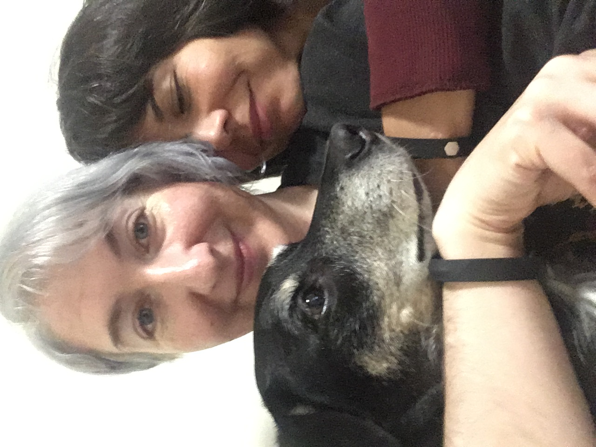

About Me

About Me:
Snooping around in the private lives of galaxies has been a desire of mine for as long as I've known that the universe was home
to more than just the Milky Way. The pursuit of this passion was put on hold when at 15 I found myself needing to focus on a more
immediate desire of escaping houselessness and putting a roof over my head. During this period of my life I had many adventures --
including playing in bands, pretending to be an artist, and falling in love.
My return to school was well timed.
There have been many advances in our understanding of how galaxies form and evolve over the last several years.
With these advances come new techniques which allow us to reconstruct what a galaxy has been up to with nothing but the light we observe.
It's beyond thrilling to get to contribute to this body of work.
My specialization lies in looking at the environmental dependence of star formation in galaxies based on their star formation histories.
I'm particularly interested in the temporal and spatial relationship of star formation within galaxies in spatially resolved observations,
as well as between galaxies that are in groups or pairs.
Education:
2023 -- Rutgers University -- Ph.D. Physics and Astronomy
2020 -- Rutgers University -- M.S. Physics and Astronomy
2017 -- Cal Poly Humboldy -- B.S. Physics, Math Minor
2014 -- College of the Redwoods -- A.A. in Science
Publications: ADS link
Research

Much of my work exists at the border of where our instruments can resolve features within galaxies.
This allows for important validation of high redshift techniques on nearby and nearby low mass galaxies,
but also enables the development of
new methods that allow us to push deeper into the semi-resolved universe.
Bonus is that we can learn new things about our near-ish neighbors.
What I'm most interested in is how individual galaxies grow their stellar mass over time,
and how much impact their external and internal environment impacts this. The low redshift universe grants us access to some of the smallest, faintest,
and most plentiful galaxies. These small galaxies are the most sensitive to environment and therefore promise to tell us the most about how environment drives galaxy evolution.
SEDs and CMDs Find Synchronized Star Formation in Local Volume Dwarf Galaxies
There are two main ways of reconstructing
a galaxy's star formation history (SFH). If it is nearby, you can look at the color and brightness of its stars and infer the ages of
its stellar populations. If it is far away you can sum up
the total flux through bands at different wavelengths and then fit the galaxy's spectrum and infer the populations that
contribute to it's total light. The first is the color-magnitude diagram method of SFR reconstruction and the second is the spectral energy distribution (SED) fitting method.
I do the second one, but seeing how the two compare is an important validation!
We took galaxies that were close enough to resolve individual stars, yet far away enough to have reliable integrated photometry
and compared their SFHs. Not only did these compare well, but we found that the SFHs of the galaxies in our sample
decreased and increased their star formation
synchronistically at specific epochs in spite of being separated by great distances!!
Looking for confformity in Local Volume galaxies
Galactic conformity refers to shared property between pairs of galaxies. For example, the average color or SFR of galaxies near
a central galaxy may be similar to the properties of that central galaxy. These types or tests are usually performed on large populations
to find in-situ trends in galaxy evolution. We investigated whether the galaxies having synchronized star formation might also show conformity.
Using the SFHs of the galaxies allowed us to read the properties off the SFHs at different epochs. We did find conformity, but not in
the galaxies showing synchronized star formation, which suggests that synchronized star formation and conformity are sensitive to different effects.
Additionally we saw that the conformity signal was sensitive to the geometry of the volume. Using SFHs to test for conformity gives us a promising
new way to test for interactions back in time within a volume.
Using spatially resolved SFHs in UVCANDELS
Project description, including further links to posters, talks, publications.
Finding the effects of filaments on galaxy SFHs in the New Horizon simulation
Project description, including further links to posters, talks, publications.
The role of environment on dwarf galaxy development in LSST
Project description, including further links to posters, talks, publications.
Recognition

Awards:
Robert A. Schommer Prize, The Robert A. Schommer Prize is awarded to the one student
who, in the collective judgment of the astrophysics faculty in the Department, has published
the best first-author, refereed journal article in the field of astrophysics in the past two years
Chambliss Astronomy Achievement Student Awards, AAS 238, The Astronomy Achievement Student
Awards are given to recognize exemplary research by undergraduate and graduate students who present at one
of the poster sessions at the meetings of the AAS,
Rutgers Graduate Student Association Award for Excellence in Graduate Service, Recognizes
a Rutgers University graduate student who demonstrates a tireless track record of service. Those honored
have shown a selfless commitment to the betterment of their cohort, fellow graduate students, and/or the
community as a whole, improving the livelihood of others while encouraging an environment of inclusivity
and growth,
Media:
Grants and Fellowships:
Noemie Koller Endowed Graduate Scholarship, The Noemie Koller Endowed Scholarship in the
Department of Physics and Astronomy has been established with a gift from Prof. Koller. This
gift was made based on her appreciation of the importance of financial assistance in attracting the
best graduate students. The intent is to assist individual students and the department as a whole.
AAS FAMOUS Travel Grant, The FAMOUS (Funds for Astronomical Meetings: Outreach to Underrepresented Scientists) Travel Grants Program awards money to attend an AAS meeting.
Henry C. Torrey Fellowship, The Torrey award is awarded by the Physics & Astronomy department to
the most outstanding entering graduate students..
Rutgers Excellence Fellowship for doctoral study in Physics and Astronomy, The Rutgers Excellence Fellowship is awarded by the School of Graduate Studies (SGS) to outstanding students entering
doctoral study at Rutgers .
Cal Poly Humboldt Physics and Astronomy Department Award for Outstanding Service to
the Physics & Astronomy Community, Inaugural award given to the graduating student that according
to the department demonstrated exceptional leadership and mentorship..
John Mather Nobel Scholar, The John Mather Nobel Scholarship Program awards travel allowances
towards the cost of presenting research papers at professional conferences. Applicants must have demonstrated
high academic achievement, and be currently holding a Goddard-based research internship
Comap MCM Math Modeling Competition, Honorable Mention, COMAP Mathematical Contest in
Modeling (MCM) challenges teams of students to clarify, analyze, and propose solutions to open-ended
problems. The contest attracts diverse students and faculty advisors from over 900 institutions around the
world.
Contact
Email: charlotteastronomy -at- gmail . com
Address: